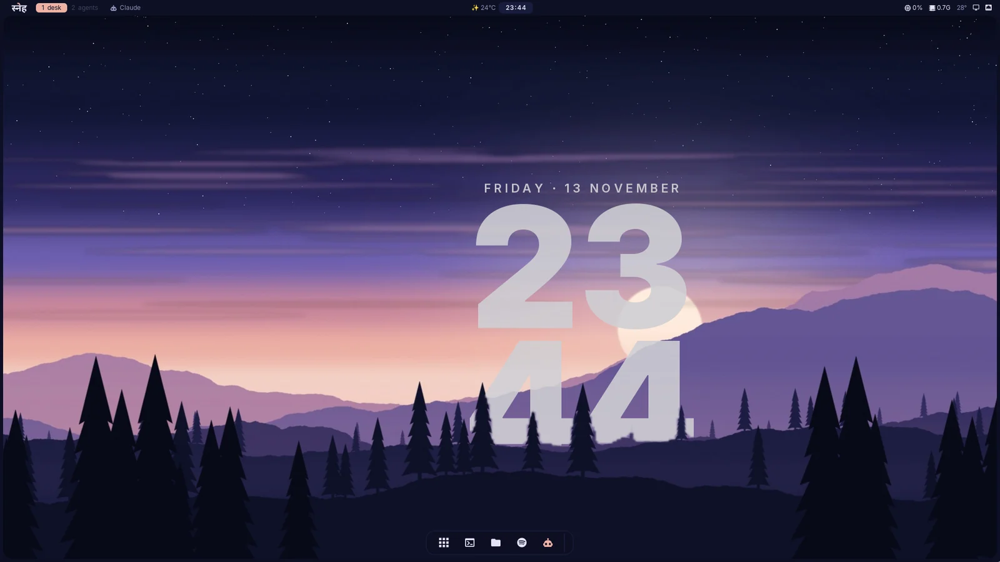

desktop Headless box
A mini PC in a cupboard. The desktop draws to a virtual screen you see over VNC. No audio, never sleeps.
स्नेह · affection for old machines
Sneh turns an old mini PC or laptop into a fast, dusk-coloured desktop with AI coding agents built in. Flash a USB stick, plug it in, and it installs itself, or walks you through a graphical installer.

No custom ISO. The official, checksummed Arch Linux ISO goes on a stick together with Sneh's installer.
Run the flasher on Windows or Linux. Answer a few questions now, or leave them for the machine.
Plug the stick into the target. It installs itself with no screen, or opens a graphical installer if it has one.
Log in, or reach it over SSH and VNC. The agents are already there.
A mini PC in a cupboard. The desktop draws to a virtual screen you see over VNC. No audio, never sleeps.
Battery, brightness, sound, Bluetooth, Wi-Fi and a lock screen. VNC is optional.
Claude Code and opencode come installed, with a manual about the machine and one CLI, sne, that answers in JSON.
› sne status --json | jq .memory_mb { "total": 3809, "available": 3090, "used": 719 } › sne gui launch foot ✓ launched foot › sne gui type "make test" && sne gui key enter ✓ typed 9 chars ✓ key enter › sne snapshot create "before the upgrade" ✓ snapshot created
sne gui takes screenshots, clicks and types over SSH, so an agent can use any app.sne snapshot undo N rolls it back.Its own wallpaper, dusk ridge, with the clock drawn behind the trees. Eight palettes recolour everything in one command.
Click one to recolour this page. On the machine: sne theme set teal.
About 20 minutes. Steps are for Windows; Linux is at the end.
winget install Git.Git git clone https://github.com/ogshrug/sneh-os.git
No Git? On GitHub: Code → Download ZIP, extract it, then run Get-ChildItem -Recurse | Unblock-File inside the folder.
winget install Microsoft.PowerShell
The flasher needs version 7.4 or newer. Check with pwsh --version.
cd sneh-os pwsh -File flasher\sneh-flash.ps1
Answer everything now. The target needs no screen or keyboard.
Answer on the target. It needs a screen, keyboard and mouse.
Then pick the mode:
Press Enter to accept a default.
desktop = headless, use it over VNC. laptop = has a screen.linux-zen (default), linux or linux-lts.auto = the only internal disk. Several disks? Type part of the model name.https://github.com/ogshrug/sneh-os.git lets sne update fetch new versions.Add -SaveConfig my.conf to keep your answers, and -ConfigPath my.conf to reuse them. The file contains your passwords.
At power-on, enter setup (usually F1, F2 or Del):
Unattended: connect Ethernet, insert the stick, power on. After a 30-second countdown it erases the disk, installs (5 to 25 minutes) and reboots. To watch:
ssh root@<hostname>-install.local tail -f /run/archiso/bootmnt/sneh/install.log
Graphical: follow the screens, confirm the erase, then press Restart now.
You can leave the stick in. It disables itself after a successful install.
ssh <user>@<hostname>.local
Desktop: open TigerVNC 1.13+ or RealVNC Viewer and connect to <hostname>.local:5900.
Name not found? Use the target's IP address from your router.
sne status # memory, temperature, services sne doctor # health checks, with fixes claude # sign in to Claude Code once
On the desktop, Super+/ lists every shortcut.
sne update updates the system, Sneh and the agents.
Read sneh/install.log on the stick from Windows.
git clone https://github.com/ogshrug/sneh-os.git && cd sneh-os cp flasher/sneh.conf.example my.conf # fill in your settings lsblk # find the stick, e.g. /dev/sdb sudo ./flasher/sneh-flash.sh -c my.conf -d /dev/sdX
Add -m full for an offline stick. Offline and graphical sticks need an Arch Linux host (they use pacman). Details: Installing.